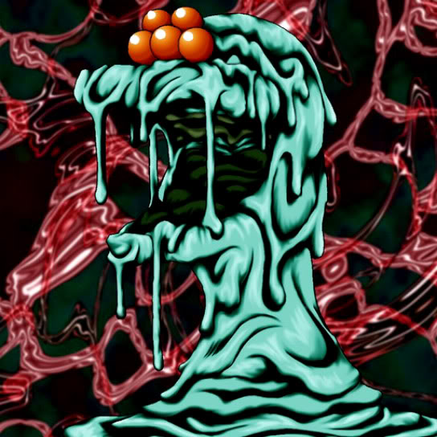

Dorover

Description: "When destroyed, spellbinds the enemy it engaged in battle for 1 turn."
STATS
ATK: 900
DEF: 800DECK COST
Deck Cost per Card: 22EFFECT NOT IMPLEMENTED
Fusion List (4 Possible Fusions)
- Dorover + Bolt Penguin = Bolt Escargot
- Dorover + Crawling Dragon #2 = Kairyu-Shin
- Dorover + Crawling Dragon = Kairyu-Shin
- Dorover + Dragon Zombie = Kairyu-Shin